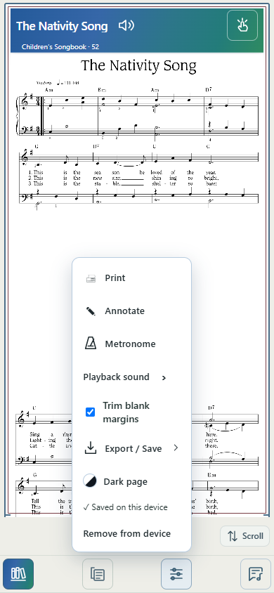
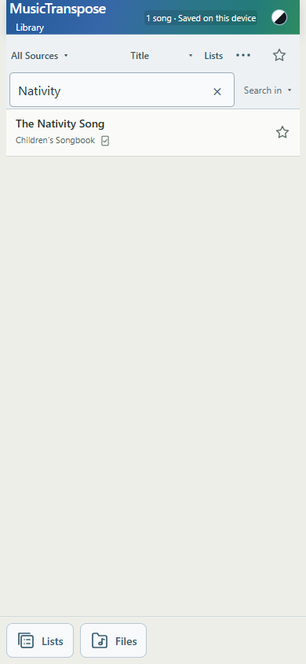
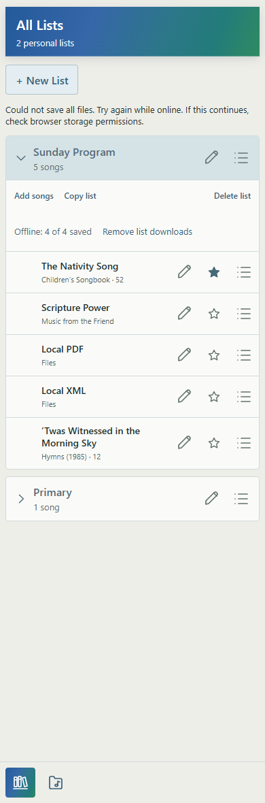
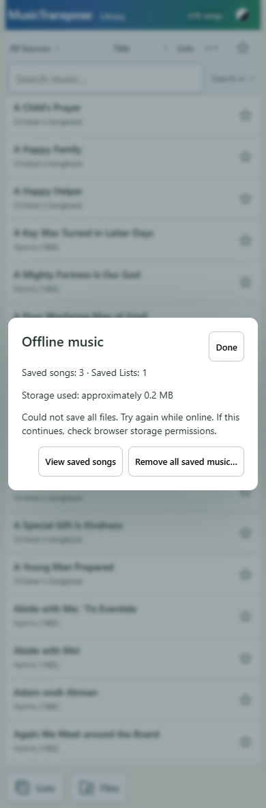

Baseline b9b281c. Service-worker shell version v229. Existing musical/rendering engines and imported-file storage format remain unchanged.
The existing service worker now manages a dedicated stable saved-asset cache and a separate stable retention registry. The registry records individual song IDs and saved-List IDs/members. Worker operations are serialized across clients. Asset URLs are deduplicated across references; a catalog-derived manifest uses the same asset and pdfAsset fields as score loading, with format roles supplied by metadata rather than filename suffixes.
Current catalog: 674 entries; 668 playable catalog songs (666 PDF + structured, 2 PDF-only), and 6 unavailable metadata-only entries. There are no structured-only public entries currently; that case is exercised with a test fixture. The former structured warmer lists 679 assets, including 13 not used as primary assets by the current catalog. The old PDF manifest contains 668 Original PDFs. No catalog/source assets were deleted.
Saved on this device requires a durable individual/List reference, readable required explicit asset bodies with expected PDF/structured signatures, and the existing complete app-shell resource set. Merely opening music or finding it in an incidental cache never creates Saved status. The shell includes Melody extraction, generated harmony, transposition, bundled lyrics, PDF rendering and synthesized playback support. No derived Melody rendering or audio sample cache is created.
Verification runs through one shared manager/worker API and shared state event. It refreshes on relevant view/menu entry, focus, worker changes, and save/remove operations. A refresh arriving during another verification schedules a follow-up. Missing assets or unavailable storage remove the verified Saved claim.
| Action | Result |
|---|---|
| Score Tools → Save on this device | Saves both PDF and structured representations when present; primary structured or PDF alone otherwise. Verifies before showing Saved. Partial successes stay available for retry. |
| Remove from device | Removes only the individual request. Bytes remain while another individual/shared-asset or List reference requires them. Tools says Saved by List when only List retention remains. |
| Save list on this device | Registers playable members, prepares missing assets sequentially and reports progress. Existing verified assets are skipped. One unavailable download does not undo others. |
| Offline: N of N saved | Counts verified catalog songs and imported Files actually present locally. Unavailable metadata entries and missing local records are excluded, with accessible explanatory detail. |
| Remove list downloads | Removes that List’s references only. The List, aliases, order, Favorites, other List references and individual saves remain. Adding/removing members in a retained List reconciles references; new missing assets require the visible Save action rather than automatic downloads. |
Verified songs receive a small device/check indicator beside source metadata, with accessible Saved on this device text. Unsaved rows get no icon. More → Saved on this device is a temporary filter layered on Source/List, Search, Sort and Favorites; it is not a new Source. Its active state is visible in the results count and More menu.
Imported Files remain in the existing IndexedDB store. Verified local records show On this device, are never copied into the saved cache, and have no casual offline-delete action. Their destructive deletion workflow is unchanged.
More → Offline music now shows verified saved songs, completed saved Lists (with incomplete request totals when applicable), and approximate storage from actual cached response-body byte lengths. View saved songs opens the Library’s Saved filter. Remove all saved music requires confirmation and clears explicit references/assets only; Lists, Favorites, imported Files, and legacy incidental caches remain. The old bulk Prepare Original PDFs UI is replaced.
Startup no longer sends cache-scores, and the worker no longer runs its automatic structured warmer. Existing incidental/runtime cache behavior and previous-cache migration remain available; legacy bytes are not promoted into explicit ownership. Removing explicit assets therefore does not promise that previously incidental copies become unavailable immediately. No automatic eviction or redownload was added.
Explicit assets are checked before ordinary fetch handling, including URLs without a file extension. Their cache and registry survive shell updates. navigator.storage.persist() is requested during explicit save. Browser/iOS storage may still be evicted; Saved describes verified current availability, not permanent storage immunity.
Offline saves, 404s, partial downloads, quota exceptions, unavailable Cache Storage, missing service workers and external cache loss are handled without false Saved status. Quota failures stop further preparation, retaining successes. Retry skips verified assets. Failure text remains available after status refreshes.
Offline tests use Chromium/Edge with actual service workers and networking disabled, not mocked Saved state. Visual screenshots were inspected. No broad rendering, harmony, playback, metronome or export suite was run.
app.js, index.html, library.js, lists-view.js, files-view.js, offline-worker.js, offline-music.js, styles.css, sw.js; new offline-assets.js, offline-catalog.json, offline-manager.js, offline-score-ui.js; tests/offline-music.mjs, tests/offline-retention.mjs, tests/build-offline-catalog.mjs; this report and its screenshots. Source MXL/PDF, generated harmony, navigation/Auto-scroll, musical engines, local-music-store.js and my-music.js are unchanged. Pre-existing diagnostic files are untouched.




The commit containing this report records the implementation. Commit SHA, push/deployment outcome and live v229 verification are supplied in the completion message. Physical iPhone/iPad acceptance remains: save a song and a List online, enable Airplane Mode, reopen Original/Transpose/Melody, check shared-reference removal, and confirm storage/status behavior after relaunch. Browser tests do not replace this physical check.